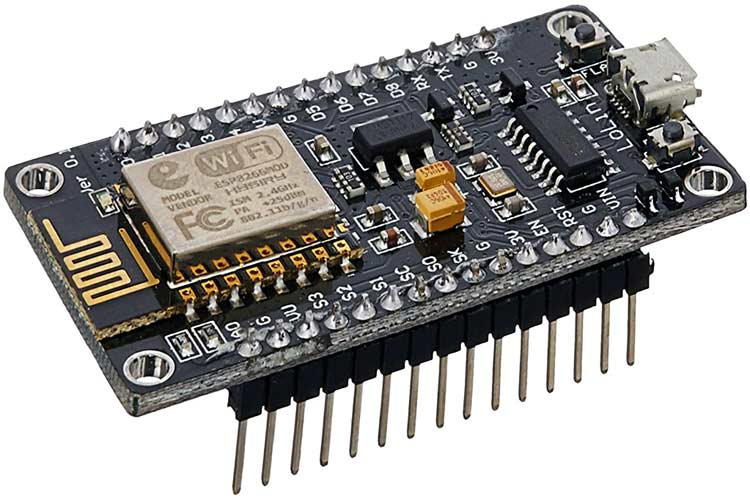
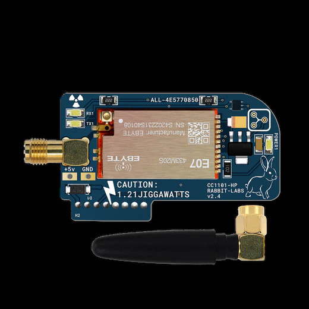
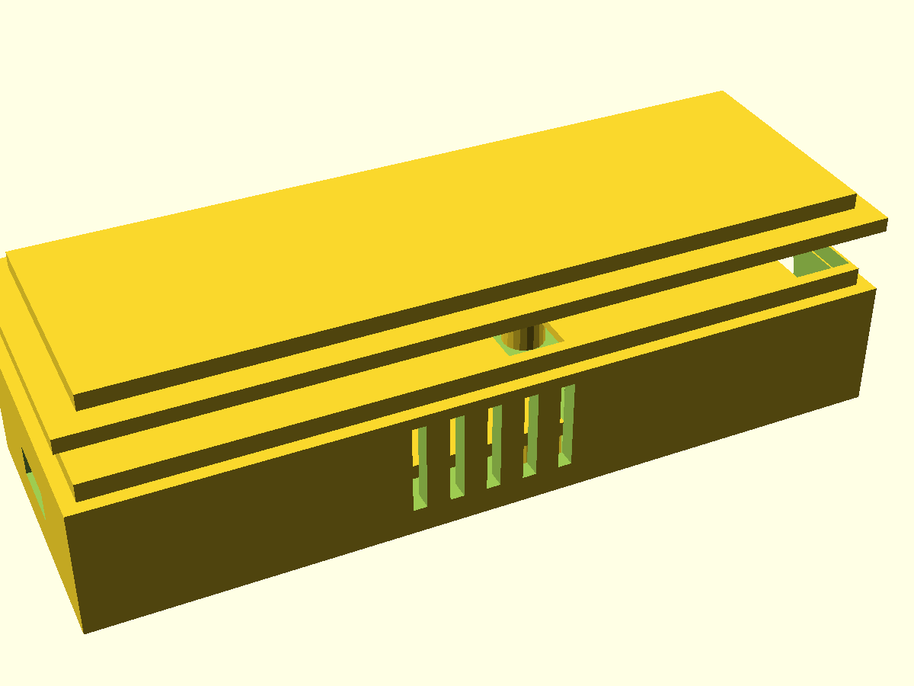
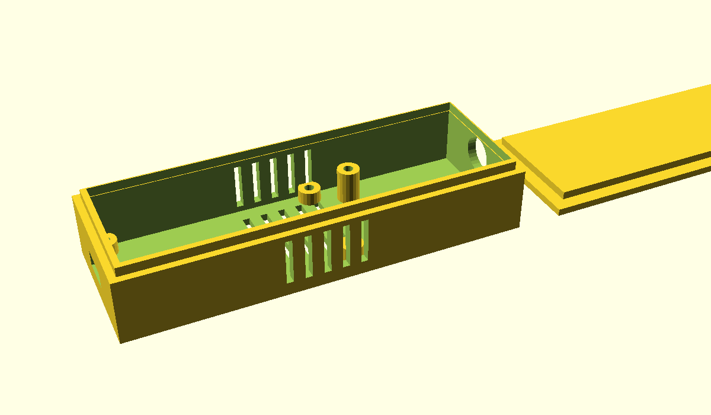

A 433MHz RF light controller built with an ESP8266 (NodeMCU v2) and CC1101 transceiver, managed through ESPHome and integrated with Home Assistant. Controls bedroom and living room lights over ASK/OOK modulation using captured RC Switch codes, with Amazon Alexa voice control via emulated_hue. Also functions as a passive RF signal monitor, logging all received 433MHz transmissions for discovering nearby weather stations, door sensors, and other devices.


Check out the project on GitHub: Radio Controller on GitHub
Back to Portfolio